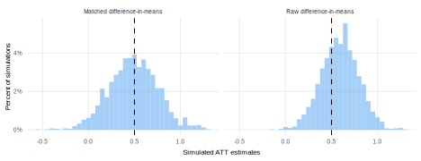

library(MatchIt)
exact_matching <-
function(data) {
matched <- matchit(D ~ X, method = "exact", data = data)
match.data(matched)
}
declaration_16.2 <-
declare_model(
N = 100,
U = rnorm(N),
X = rbinom(N, 1, prob = 0.5),
D = rbinom(N, 1, prob = 0.25 + 0.5 * X),
Y_D_0 = 0.2 * X + U,
Y_D_1 = Y_D_0 + 0.5
) +
declare_inquiry(ATE = mean(Y_D_1 - Y_D_0)) +
declare_step(handler = exact_matching) +
declare_measurement(Y = reveal_outcomes(Y ~ D)) +
declare_estimator(Y ~ D,
weights = weights,
.method = difference_in_means,
label = "Matched difference-in-means") +
declare_estimator(Y ~ D,
.method = difference_in_means,
label = "Raw difference-in-means")Selection-on-observables
We declare a design in which a researcher tries to address concerns about confounding by conditioning on other observable variables. In the design the researcher has to specify how the other variable creates a risk of confounding and how exactly they will take account of these variables to minimize bias.
When we want to learn about causal effects, but treatments are allocated by the world and not by the researcher, we are sometimes stuck. It is possible that a comparison of treated units to control units will generate biased inferences because of selection – the problem that certain types of units “select” into treatment and others into control. If the average potential outcomes of the groups that come to be treated or untreated are not equal, then a comparison of the realized outcomes of the two groups will yield biased causal inferences.
Sometimes, however, we know enough about selection in order to condition on the variables that cause it. A selection-on-observables design stipulates a family of models \(M\) of the world that describe which variables are responsible for selection, then employs a data strategy that measures those variables, rendering them “observable.” In the answer strategy, we draw on substantive knowledge of the causal process to generate an “adjustment set,” or a set of variables that predict selection into treatment. In the language of causal path diagrams, an adjustment set is a set of variables that, when conditioned upon, closes all back door paths from the treatment to the outcome. We can condition on the adjustment set using a variety of alternative answer strategies, for example through regression adjustment, stratification, or matching.
The quality of causal inferences we draw comes down to whether our claims about selection into treatment are correct. If we’ve missed a cause (missed a back door path), then our inferences will be prone to bias. It is the nature of the selection-on-observables design that we can’t know if our claims about the processes that cause selection are correct or not; the design amounts to a leap of faith in the theoretical model.
The problems don’t end there. We risk bias if we fail to adjust for \(X\) under some models — but we will also risk bias if we do adjust for \(X\) under other models. In Figure Figure -1.1 we illustrate four of the possible roles for an observable variable \(X\): as a confounder of the relationship between \(D\) and \(Y\); as a collider, which is affected by both \(D\) and \(Y\); as a mediator of the relationship between \(D\) and \(Y\); and as a predictor of \(Y\) with no connection to \(D\). We set aside in these DAGs the possible roles of an unobservable variable \(U\) that would introduce additional problems of confounding.

If \(X\) is a confounder, failing to adjust for it in studying the relationship between the treatment \(D\) and outcome \(Y\) will lead to confounding bias. We often think of fourth DAG as the alternative to this, where \(X\) is a predictor of \(Y\) but has no link to \(D\). In this circumstance, we still want to adjust for \(X\) to seek efficiency improvements by soaking up additional variation in \(Y\), but failing to do so will not introduce bias. If the true model is definitely represented by either the first or fourth DAG, we should clearly choose to adjust for \(X\). In the first case, we should adjust to close the back-door path and in the fourth case, we will do no worse in terms of bias and may in fact increase precision.
However, the middle two DAGs present problems if we do adjust for \(X\). In the first, \(X\) is a collider: it is affected by both \(D\) and \(Y\). Adjusting for \(X\) if this is the true model introduces collider bias, because we open a backdoor path between \(D\) and \(Y\) through \(X\). We also introduce bias if we control for \(X\) if the mediator model (DAG 3) is the true model, wherein \(D\) affects \(X\) and \(Y\) and \(X\) affects \(Y\) (i.e., \(X\) is a mediator for the relationship between \(D\) and \(Y\)). But the reason here is different: controlling for a mediator adjusts away part of the true treatment effect.
In a selection-on-observables design, we must get many features of the model correct, not only about the factors that affect \(D\). We must be sure of all the arrows into \(X\), \(D\), and \(Y\) and the order of the causal arrows. In some cases, in natural experiments where selection processes are not randomized by researchers but are nevertheless known, these assumptions can be sustained. In others, we will be making heroic assumptions.
Declaration Declaration -1.1 explores these considerations, with a model defining the relationship between a causal factor of interest \(D\) and outcome \(Y\) and an observable confounder \(X\), the average treatment effect as the inquiry, a simple measurement strategy, and two estimators with and without adjustment for \(X\). We use exact matching as our adjustment strategy.
Declaration -1.1 (Matching design declaration)
We declare beliefs about the selection process and how \(D\), \(Y\), and \(X\) are related. The model needs to include potential outcomes for the main outcome of interest (\(Y\)) and a specification of the assignment of the key causal variable (here, \(D\)). Here, we have defined the assignment process as a function of an observable variable \(X\). In fact, \(X\) is the only variable that affects selection into treatment: \(X\) is a binary variable (i.e., two groups), and the probability of treatment is 0.4 when \(X=0\) and 0.6 when \(X=1\). In addition, we define the potential outcomes for \(Y\), which invoke confounding by \(X\) because it affects both \(D\) and \(Y\). We only invoke one possible relationship between \(X\), \(Y\), and \(D\), and so do not consider the possibilities of colliders or mediators.
In our model, \(U\) is not a confounder, because it affects \(Y\) but not \(D\); this is a strong excludability assumption on which our causal inferences depend. The assumption is strong because ruling out all unobservable confounders is typically impossible. Most causal factors in nature are affected by many variables, only some of which we can imagine and measure. The first estimator, with adjustment, uses the weights from the exact matching estimator. The matching procedure adjusts for differences in the probability of selection into treatment according to \(X\). The second, unadjusted, estimator does not control for \(X\) so suffers from unobserved confounding, because we do not adjust for \(X\) which predicts both treatment and the outcome.
Diagnosis -1.1 (Matching design diagnosis) In Figure Figure -1.2, we see that the raw, unmatched estimate is quite biased (about 20% of the average estimate) and that the matched estimate is unbiased. If we fail to adjust for the observable features of the selection process, we have biased answers. But if we do control in this case, we obtain unbiased answers. However, as highlighted earlier, these results depend on the plausibility of our model, which in this case involves observed confounding of the relationship between \(D\) and \(Y\) by \(X\). If there was unobservable confounding from \(U\), or if \(X\) was a collider or mediator, there would be bias even if we control for \(X\).

Design examples
Bateson (2012) uses a selection-on-observables design to estimate the causal effect of crime victimization on political participation from regional barometer survey data. The main specification is justified by the argument that all back-door paths are closed using Ordinary Least Squares regression and a robustness check uses a nearest-neighbor matching approach under equivalent assumptions.
Prillaman (2022) uses a matching design to compare Indian villages that featured women’s self-help groups to those that did not on rates of women’s political participation.